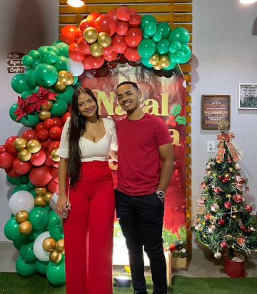

Retrospectiva
Tudo teve inicio naquele dia que a gente estava no vôlei, onde eu te vi pela primeira vez e que até te fiz uma pergunta não muito conveniente, mas você me respondeu de um jeito muito educado, desde o início isso sempre me encantou em você, tanto que no mesma hora eu fique até sem jeito de ter perguntado.
Então a gente foi se encontrando nos rachas, fomos nos aproximando, jogando juntos, conversando, "treinando" até deixar em casa eu fui, umas duas vezes, mas nenhuma foi do jeito que eu esperava.. 😔
Então começaram com umas conversas, "boatos", de que existia um grupo que o assunto principal era eu, aí eu fiquei curioso em saber mais. Depois de um tempo, com o pessoal soltando piadinhas, jogando no ar, não vou mentir, eu já sabia que era você, mas sabe, né...
Não podia me fazer de fácil assim...
Mas se naquele tempo eu soubesse que seria tudo isso, eu n teria perdido nenhum segundo sequer.
E nesse chove e não molha a gente passou um bom tempo, até que finalmente apareceu uma oportunidade boa de verdade.
27/12/2021
Do nada se ajeitaram pra ir pra calçada da Isabelly e eu fui te perguntar se a gente ia mesmo, logo na intenção de nem ir pra lá, só ficar contigo mesmo e para surpresa de muitos, você aceitou. Acho que naquele mesmo dia eu descobri que ia ser você mesmo, a mulher que eu queria pra minha vida, por que eu me atrasei dois minutos, já estava mandando "tá vindo é da china?" kkkkkk
Já queria mandar em mim, olha, quenrendo controlar o tempo que eu levo de casa até a casa dela...
aiai, viu Mayane...
Então eu fui, sem pretensão alguma de que ia rolar uma coisa mais forte entre a gente, mas na mesma noite, eu cheguei em casa golpeado, fui atrás de iludir e quem foi iludido fui eu...
Sem duvidas, algo dentro de mim já tinha despertado, eu só não sabia o que era. E no outro dia a gente se encontrou de novo, não só a gente, né, mas em uma confraternização com nosso amigos, brincamos, conversamos, até que deu a hora de todos irem pra casa, menos eu... 🤭 então nos finalmente ficamos a sós e funalmente e podia sentir aquela sensação boa de estar contigo mais uma vez, eu só não contava que a celinha ia me aparecer lá fora. Eu quis procurar um buraco tão grande pra me enterrar, nesse dia, que tu n tem noção. Enfim, sei que no outro dia nem me deu moral, eu que tive que puxar assunto pra ver se falava comigo, aí eu me fiz de difícil tb, de que só queria um fica msm e nd mais, mas no fundo estava chorando, por que tu não queria mais saber de mim, mas isso nem durou muito tempo, porque no outro dia eu já estava lá te perturbando de novo pra saber se você queria sair comigo kkkkkk e você aceitou, então quer dizer que não foi tão ruim, das primeiras vezes...
Nesse dias a gente conversou muito, nos conhecemos ainda mais e você me lança a proposta de ir pra baleia no ano novo, não vou mentir que isso foi a maior coisa que eu já fiz por uma pessoa, então tu tinha que ser a mulher da minha vida mesmo, você não tinha mais nem escolha kkkkkkk.
Nem passava pela minha cabeça ir passar o ano novo na baleia, até você me chamar, então eu comecei a ver o possível e o impossível pra ir. Ia já deixar aquela pessoa incrível de conversar, com um beijo que me pegou e um cheiro que só ela sabe dar no meu cangote escapar assim... jamais!
Então eu fui, arranjei carona com um cara que eu mal conhecia que tinha acabado de acordar, de ressaca, me montei encima de bizz, na chuva, sem ter nem como voltar, só pra ir atrás do amor da minha vida. E fique sabendo, que com toda certeza eu faria tudo denovo pra ter você comigo. Só eu sei o tanto que você me fez bem durante esse ano que a gente pôde estar juntos, só eu sei a pessoa que eu era e a que eu estou me tornando hoje, por você e por nós. Nunca trocaria nenhuma madrugada que eu passei na sua casa, ou essa viagem maluca que eu fiz por qualquer outra coisa que n fosse você.
Continuando...
No fim deu tudo certo, cheguei lá a gente deu de cara com o Joao Victor e isabelly, que foi como a gente conseguir achar a casa, por que quem eu ligava não me atendia... 👀.
Sei que foi uma das melhores viagens da minha vida simplesmente por estar com você, sem dúvidas, esse foi um dos melhores anos da minha vida, se não o melhor, simplesmente por ter você ao meu lado. Esse simples fato e as coisas maravilhosas que você me proporcionou e que continua me proporcionando é o que faz de você o amor da minha vida e que eu jamais vou querer perder tudo isso que é você.
Quando a gente voltou dessa viagem eu lembro que ficamos um pouco estranhos um com o outro, no outro dia a gente mal se falou, fomos nos falar de noite, quando eu meti o H; “Vindo aqui só pra perguntar como que foi seu dia”.
A cara do golpista, mas a gente sabe que quem tava golpeado de vdd era eu…
03/01/2022
Sei que a partir desse dia em diante a gente nunca mais deixou de se falar um dia sequer. Acho que nunca tive uma conexão tão forte e tão boa assim com alguém em toda a minha vida. Quando eu digo que você é a mulher da minha vida, eu quero falar dessas pequenas coisinhas que a gente é desde o início, até o que a gente é hoje em dia e o que a gente ainda temos pra nos tornar, juntos.
Então, nesse meio tempo fomos nos conhecendo cada vez mais, conversando todos os dias, nos vendo quase todos eles e sempre aumentando o apreço um pelo outro. Até que chegou fevereiro e com ele o seu aniversário.
10/02/2022
Eu lembro que fiquei em uma indecisão gigante do que lhe dar. Se comprava uma coisa simples, se comprava uma coisa pra lhe encher os olhos, se era uma coisa que mostrasse meu amor logo de uma vez, mas vai que você se assustava com aquilo, assim de uma vez…
De verdade, eu não sabia o que comprar, Fui pedir ajuda pra tanta gente e eram tantas respostas diferentes, até que eu me decidi que aquela escolha tinha que ser inteiramente minha e o que eu realmente queria era que você soubesse logo de uma vez tudo o que eu sentia. Que eu te amo daqui até a lua e voltando!
Então eu escolhi.
Minha filha não tem um pingo de noção do quanto que eu fiquei com medo da tua reação, quando visse kkkkkkkkk.
Fiquei com medo de você não querer nem usar, pensar “o que esse emocionado tá pensando? Pois ele vai continuar só sonhando que eu vou usar isso!” 😭
Mas olha só, não é que eu acertei.

Eu queria dizer que desde antes daquele momento, eu já sentia tudo aquilo por você. Você conseguiu me conquistar com simples conversas, com sorrisos sinceros e com a sensação maravilhosa que é estar ao seu lado.
Muito obrigado por sempre ser tão perfeita assim comigo, desde o início até agora.
E também queria dizer que o sentimento que eu tinha pra lhe dar esse cordão com uma declaração tão explicita assim e tão cedo como foi, ainda mora aqui dentro de mim e cada dia você consegue fazer ele aumentar mais.
Repetindo mais uma vez, não me arrependo de nada que eu fiz por vc ou por nós, faria tudo de novo! Com a mesma intensidade, do mesmo jeito, sem mudar uma virgula se quer do nosso passado, pois se somos o que somos hoje é por causa dos aprendizados do passado e dos nosso pensamentos gigantes pro futuro, que se Deus nos permitir, vamos realizar tudo o que temos em mente, um do lado do outros, relembrando de quando eram apenas sonhos.
Nesse meio tempo a gente foi se aproximando e se aproximando sempre cada vez mais e sem nem ver, comecei a sentir que não conseguiria mais viver sem ti, sem os cheiros, sem os abraços e sem os beijos que só você tem e sabe me dar, todo o carinho e as formas de amor que você demonstra por mim, sou muito grato por tudo isso. A gente aconteceu tão rápido e foi tudo tão de pressa, que nem nos demos conta do que estava acontecendo, apenas deixamos fluir, nada de restrições de nenhum dos lados, nenhuma reclusão ou impedimento e mesmo que existisse, passávamos por cima de tudo, pra no fim do dia estarmos juntos, como uma forma de recarregar as baterias de um dia cansativo.
14/04/2022
Então veio o sofrido pedido de namoro kkkkkkk
Depois de alguns meses contigo me aperreando pra te pedir logo eu finalmente tomei minha decisão. Não por aperreio seu, ou por prazos que você me dava, por que eu vi que realmente estava na hora de dar mais um passo no nosso futuro. Talvez a pressão tenha ajudado um pouco, mas eu já tinha a decisão na minha cabeça de que eu ia sim, pedir você em namoro.
Jamais iria deixar um presente enviado diretamente de Deus pra mim escapar das minhas mãos assim.
Então o pedido foi feito, nervoso, mas deu certo e por incrível que pareça, você aceitou kkkkkkk
Olha só, o que era pra ser só uma brincadeirinha, o que acabou se tornando...
Sério, aquela noite foi um misto de sentimentos muito grande pra mim, além de finalmente ter encontrado uma pessoa incrível e maravilhosa, tanto por dentro como por fora, ela estava se tornando a minha primeira namorada.
A primeira e única namorada que eu quero pra minha vida!
Dois dias depois a gente fez a nossa primeira “viagem” juntos kkkkkk
Subimos a serra junto com os menino e lá tiramos alguma fotos, inclusive, aquela que está naquele quadro de madeira que você me deu no dia dos namorados, que eu olho pra ela todos os dias e consigo sentir todo o nosso amor nela. Sempre que eu estou angustiado, ou com vontade de desistir, eu olho pra ela e lembro o porque de eu estar passando por isso e volto com força total kkkkkkk.
Mas brincadeiras a parte, eu encontrei em você uma razão para querer sempre melhorar. Encontrei na gente um motivo para quere crescer na vida, sendo exagero da minha parte e ao mesmo tempo não, achei um motivo em você pra estar vivo, vivendo tudo o que a vida tiver pra me dar enquanto eu estiver atrás de algo bom pra gente.
Algumas semanas depois começaram a acontecer várias coisas na minha vida, tudo dando errado e tudo de uma vez. Eu lembro dos sentimentos daquele tempo e que minha única vontade, era que desse logo a hora de eu poder ir pra sua casa, queria que você chegasse logo, pra eu poder ir lhe ver e me livrar daquele peso, pelo menos por algumas horas. É como se contigo eu estivesse no meu porto seguro, sabe, o mundo pode estar se acabando ao meu lado, mas quando eu estou com você é como se nada daquilo tivesse mais importância naquele momento, a única coisa que eu quero é aproveitar a sua companhia, sinto como se o peso que eu estou carregando o dia todo nas costas sumisse, em um passe de mágica. Eu me sinto mais leve, menos ansioso, e muito, mas muito amado!
Obrigado por tudo isso, meu amor, obrigado por você ser essa pessoa que eu sempre pude e posso contar até hoje, para qualquer hora que precisar, que sempre está ali pra me estucar, que não importa o que eu tenha feito, ou o que tenha acontecido comigo, você sempre mantem a calma e consegue me fazer calmo. Eu amo tudo o que você é, em quem você está me tornando e principalmente em quem nos vamos nos tornar, juntos.
Nesse meio tempo eu fui me apaixonando cada vez mais por você, cada dia que passa eu me apaixono um pouco mais e tenho ainda mais certeza de que eu quero você pelo resto da minha vida. Como você sabe, você é minha primeira namorada, mas mesmo antes, eu já tinha experiência, sabia o que era um relacionamento e sabia o que eu queria no meu e acho que por isso que nunca me entreguei como me entreguei pra você, eu até idealizava, mas nunca imaginei viver um relacionamento tão perfeito como o nosso. Você é muito mais do que eu imaginava que merecia e que um dia eu sonhei, nunca que passou pela minha cabeça que eu merecia uma pessoa como você na minha vida. Eu nunca vou cansar de dizer que eu te amo e o tanto que eu sou grato a Deus pela oportunidade que ele me deu de poder ter te conhecido e a você por ser assim, incrível, maravilhosa, carinhosa, atenciosa, séria quando tem que ser, brincalhona quando estamos juntos, você é simplesmente um mulherão, meu amor!!
Mulherão!
O mulherão da minha vida!
Durante esse meio tempo as nossas vidas foram se “juntando”, fomos tornando-as uma só, fomos conhecendo os amigos um do outro, entrando nos ciclos de amizades, sendo convidados a participar das coisas que o outro era chamado, tendo mais intimidade com a família um do outro e entre nós, também.
Inclusive foi a época que você veio aqui em casa pela primeira vez, pra experimentar o creme da solene. Fique muito feliz aquele dia em poder te apresentar pra minha família.
Nossa convivência foi ficando cada vez maior e sempre com uma intensidade incrível que só consigo achar na gente.
16/07/2022
O tempo foi passando tão rápido e a gente nem sentiu, quando nos demos conta já estávamos no meio do ano e você de férias, então conseguimos a casa do João pra irmos pra praia e foi simplesmente incrível poder passar aqueles dias com você, a nossa primeira viagem assim juntos. Fiz de tudo pra aquela viagem dar certo, até pedi a moto do pai pra ir e ainda bem que deu certo, por que eu lembro que você não estava nem um pouco boa comigo, porque eu já tinha feito a gente desistir de uma, se essa não desse certo era arriscado até me comer vivo… 😬
Lá a gente viveu dias incríveis, brincamos, nos relacionamos, jogamos, andamos de moto e tiramos fotos maravilhosas que representam muito bem a gente e o nosso amor.
Mas nela não aconteceram só altos, aconteceu um baixo, mas foi um baixo extremamente necessário para o nosso relacionamento, tanto pra mim, como pra você e que hoje eu vejo ele como uma virada de chave nas nossas vidas.
Embora tenha sido um motivo de discussão pra nós e ter sido durante um bom tempo, eu agradeço por ter acontecido do jeito que foi. Agradeço a você pela coragem de me contar e principalmente por me dar a maior lição da minha vida e com ela a maior dádiva que existe, indiretamente você me ensinou o que é o perdão.
Quando eu digo que agradeço por tudo no nosso relacionamento, é isso o que eu quero dizer, falo das alegrias, do nosso amor, dos carinhos, os cheiros, a importância que você me dá, entre as outras coisas incríveis que você me proporciona dentro do nosso relacionamento, mas também agradeço pelas tempestades que já passamos juntos e é essa palavra de melhor nos define, “juntos”. Independente das circunstâncias, do momento ou de qualquer que seja cenário a gente sempre tá ali um com o outro, de mãos dadas, sem deixar o barco e vai ser assim pelo resto das nossas vidas.
E é literalmente, viu.
Por que um não pode sair sem o outro kkkkkk
O tico e o teco.
A gente foi se acostumando assim, né, sempre fiz questão de te levar pra onde eu fosse, sempre fiz questão de mostrar que estou com você, que a gente é um casal e que me orgulho muito do nosso relacionamento e do mesmo jeito é você, a gente nunca precisou tá cobrando nada disso um do outro, sempre foi o mais sincero possível.
Depois de alguns dias chegou meu aniversário e uma surpresa muito grande pra mim, com o presente que você me deu. Eu não esperava por aquilo de jeito nenhum amor, tanto que eu fiquei totalmente sem jeito, quando vi o que era, sem jeito e encantado, com aquela maravilha que foi escolhida exclusivamente pra mim por você.
Sério, não poderia ter sido melhor.
Eu amei esse relógio de um jeito que você não tem noção, além de ter sido você que me deu, ele é exatamente do jeito que eu gosto, não sei como, mas você acertou em cheio na escolha, eu não sei se você sabia disso, mas tá aí, tudo o que eu acho daquele presente maravilhoso que você me deu, mas acho que já tá bem na cara, né; uso ele até pra ir bem ali na esquina.
Mas esse não foi o único presente que você me deu, teve o do dia dos namorados, aquela blusa que eu também amo ela com aqueles chocolatinhos, junto com aquele quadrozinho de madeira com a nossa foto que eu deixo aqui do lado do meu computador pra sempre ficar olhando pra ele, tiveram cartinhas, que eu guardo todas, tanto dentro do potinho de chocolate, quanto colada no meu guarda roupas, dentro da carteira…
Eu quero andar com você sempre que posso e quando não posso estar com você quero estar com algo que lembre nós dois e sempre lembrar do nosso amor.
E enquanto os meses vão passando nossa intimidade vai crescendo, o amor aumentando, a cada dia que passa a nossa relação vai se fortificando cada vez mais e em meio a tudo isso eu vou vendo o quão apaixonado eu sou por você. A melhor hora dos meu dias é quando eu posso estar perto de você, poder sentir seu cheiro, olhar pra você, sentir você, hoje em dia eu não consigo mais imaginar como eu conseguia viver sem esse amor que eu recebo todos os dias, sem esses cheiros gostosos que você me da, sem as palavras de amor que você declara pra mim sempre que pode, sem as noites ao seu lado...
Sério, amor, eu te amo de um tanto que é difícil de descrever com palavras, eu tento expressar tudo o que sinto por você, mas o que eu consigo não chega nem aos pés do que realmente tem de sentimento por você dentro de mim. Desde a sua chegada eu sou o cara mais feliz desse mundo, obrigado por tudo, meu amor!
E eu espero que o que eu não consigo lhe mostrar em palavras eu consiga lhe fazer sentir todos os dias, como você faz comigo.
Eu amo seu jeito, eu amo sua voz, eu amo seu corpo, eu amo seu cabelo, eu amo seu olhar, eu amo seu sorriso, eu amo suas manias, EU AMO VOCÊ!!
E principalmente namorar você.
Continuando nossa retrospectiva…
20/11/2022
Chegou novembro e eu quase zerei o game, passei uma copa do mundo namorando, olha só…
Quem me viu quem me vê, meu amor
Pra quem vivia falando e finalmente chegou o dia eu vivi da melhor maneira possível essa experiência. Uma copa do mundo que para os outro pode não ter sido boa, por que o Brasil não ganhou, mas que pra mim já foi uma copa vencida, de muitos anos de sofrimento e solidão kkkkkkkkkk.
Finalmente uma copa que eu pude ir pra casa da sogra e torcer lá com a minha gata…
E a gente aproveitou cada momento juntos, em todos os jogos estávamos na torcida, vibrando juntos, reclamando juntos e infelizmente nos frustrando juntos, todo mundo doido por mais uma folguinha na semana…
Esse mês também foi a primeira vez que você foi viajar só, fiquei com o coração na mão e o peito apertado de deixar minha pretinha ir sozinha pra fortaleza, nunca que eu pensei que iria deixar isso acontecer, mas infelizmente aconteceu 😔 kkkkkk
25/12/2022
E finalmente dezembro, finalmente eu podia dizer pra mim mesmo que zerei a vida, ia passar um natal namorando e na casa da sogra, além de poder ter levado pro natal da minha família e no finda noite dormir ao seu lado.

O tanto que eu idealizei isso durante toda minha vida de solteiro…
E se aquilo fosse um sonho eu n queria que ninguém me beliscasse kkkkkkk.
Simplesmente o natal mais especial da minha vida. Não só o natal, o ano, por que o natal foi consequência de um ano incrível que eu pude passar ao lado da pessoa mais maravilhosa que eu poderia ter encontrado na minha vida.
Esse ano representa pra mim muito mais que qualquer outro em toda a minha vida, mais que algum ano que eu tive muito dinheiro ou que eu fui muito feliz, na verdade não da, né, por que com certeza ele perdeu o posto pra esse ano que eu estive ao seu lado.
Mas agora brincadeira a parte, tenho que te agradecer muito por esse ano, amor. Por cada momento, todas as brincadeiras, cada puxão de orelha, todos os ensinamentos, mas acima de tudo, pela forma que você me ensinou a amar. Sou muito feliz por ter aprendido isso com você e principalmente por ter vivido tudo isso ao seu lado.
Obrigado por ser tão incrível pra mim, eu espero que você consiga enxergar tudo isso que você é. Te admiro muito meu amor, saiba disso e se possível, lembre sempre.
Queria que algum dia você conseguisse se olhar com meus olhos, poder ver como eu enxergo você, com certeza você ia se a char a ultima coca cola do mundo, não era nem deserto mais kkkkkk.
Eu não tenho olhos pra mais ninguém depois que conheci você e pretendo daqui a dez, vinte, trinta anos, o tempo que a gente estiver vivos, meu olhar e minha admiração, vão ser sempre pra você.
Daqui há um bom tempo, até ficar velhinho, quero estar amando a mesma pessoa que eu amo hoje. Você!
01/01/2023
E então nós fechamos o nosso primeiro ano juntos, o primeiro de muitos que ainda virão pela frente. Que Deus nos permita viver muito e muito outros anos juntos como esse, podendo contar sempre um com o outro pra tudo, sempre mantendo a comunicação acima de qualquer coisa e que se houver algum motivo para discussão, que sejam resolvidas sempre do jeito que todas foram no ano de 2022, na base da conversa e nunca ficando um contra o outro, querendo apontar defeitos do outro para aquele problema e sim resolvermos ele, juntos, com a mesma parceria que temos para vivermos dias felizes.
Assim como é hoje, eu quero que durante toda a nossa vida juntos, a sejamos um exemplo de casal, sempre um inspiração para todos os casais que nos rodeiam e para os solteiros, que eles não aceitem nada menos que isso e principalmente para os nossos filho, que terão exemplo de pais e de relacionamento.
10/02/2023
E hoje a gente está aqui, com várias histórias pra contar, momentos que vão ficar na memória e acima de tudo o nosso carinho um pelo outro que vai aumentando a cada dia que passa. Eu queria mais uma vez agradecer pelo ano maravilhoso que você me proporcionou, dizer que esse sem sombra de dúvidas, assim, disparado, foi o ano mais feliz da minha vida e te pedir pra ter mais dessa experiência durante um tempinho, nem é tanto não, só até o fim da minha vida, pode ser?
Eu te amo, meu amor e nunca vou cansar de deixar isso claro pra você de diferentes maneiras, maneiras essas que são meio diferentes, mas que são minhas, como te perturbar kkkkkk
E no mais é isso meu amor, dentre todas essa palavra, caso não tenha ficado claro, eu quero declara que sou o homem mais feliz desse mundo por ter você ao meu lado, por ter sempre o seu apoio em tudo, por poder confiar à você as minhas dores, minhas ansiedades, minhas mágoas e meus medo, porque eu se que o que você fizer a partir do momento que eu lhe contar, vai ser pra me ajudar naquele problema.
Eu confiei a você uma das coisa mais importantes da minha vida e que eu nunca confiei a mais ninguém, além de você, que é meu patrimônio emocional. E você vem cuidando dele com maestria, você vem me cativando cada dia que passa da melhor maneira possível. Sem dúvidas alguma de que você é e sempre será a melhor pessoa que eu poderia ter escolhido pra depositar essa confiança!
Você é uma pessoa que me entende, sabe do que eu gosto e do que não gosto e faz sempre questão de me fazer bem, é isso o que você faz todos os dias e que eu agradeço muito por tudo isso, todo o esforço e dedicação que você tem por mim, e principalmente por nós. Muito obrigado, meu amor!!
Eu amo você de um tanto que é inexplicável!
Sempre tive medo de me entregar pra alguém e só ir me machucando durante a vida, criando mais e mais feridas e esse foi um dos motivos pra eu nunca ter me relacionado com alguém antes, mas em você eu vi algo diferente, um brilho que eu nunca havia encontrado em mais ninguém, então eu decidi que era você, o meu amor. E foi a melhor escolha que eu fiz para toda a minha vida.
Obrigado por você ser assim, exatamente como você é.
E obrigado por ter aceitado ser a mulher da minha vida! 💘